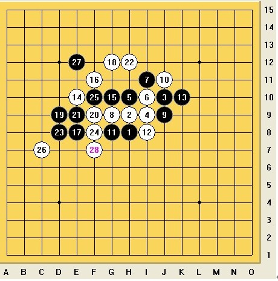

疏星的变化(二)
#1 疏星的变化(二) 作者：≈★诚心★≈ 发表时间：2010-2-20 11:51:27
（图 11 ）

以上下法，是诚心流最强下法。黑棋的每步棋都是经过本人研究过的。这里可以看出：黑棋下 27 手后，则白棋向上发展无有是处，无奈白棋只好转移阵地，下面进攻。而白棋下攻， 28 手是较强的点。白棋即使杀不出去，也可以往和棋方向发展。
虽然以上下法白棋很优，但是还是做不到完全必胜。
（图
12
）
如果我们来换个
16
/*760*90，创建于2012-2-9*/ var cpro_id = 'u761865';
#2 Re:疏星的变化(二) 作者：茗弈小刀 发表时间：2010-2-20 12:25:17
 先抢个沙发
先抢个沙发
#3 Re:疏星的变化(二) 作者：踵酃 发表时间：2010-2-20 12:50:53
 研究的很辛苦啊。。。。
研究的很辛苦啊。。。。